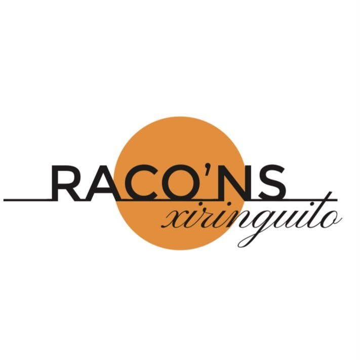
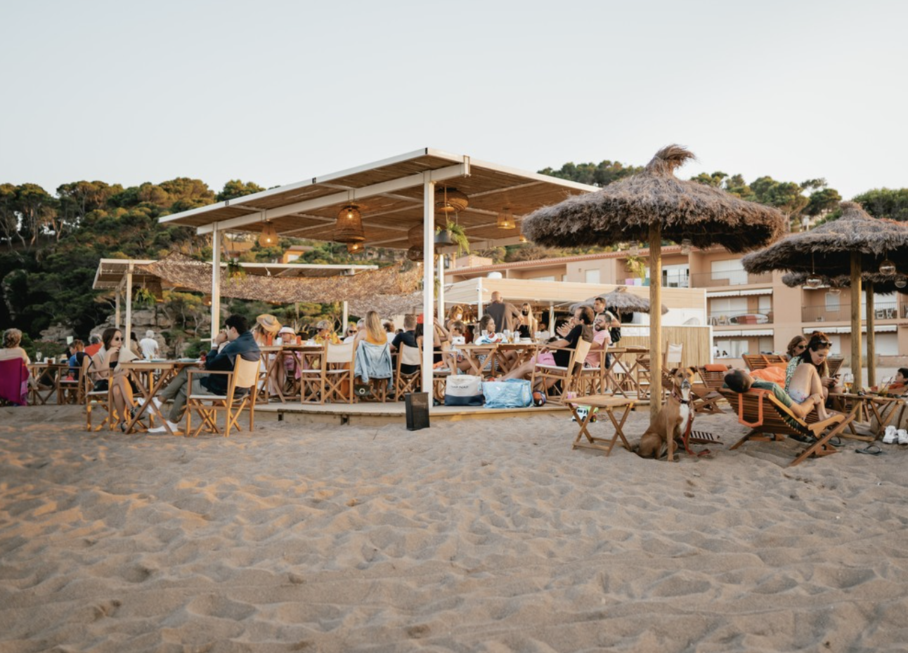
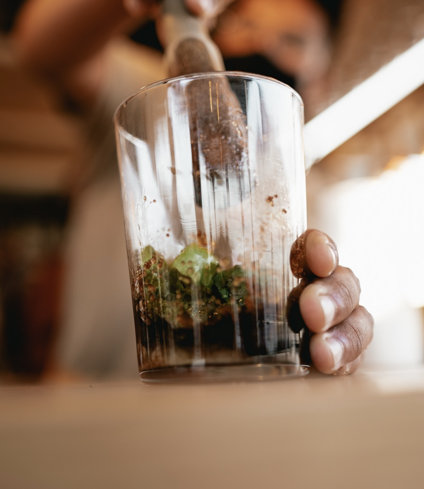
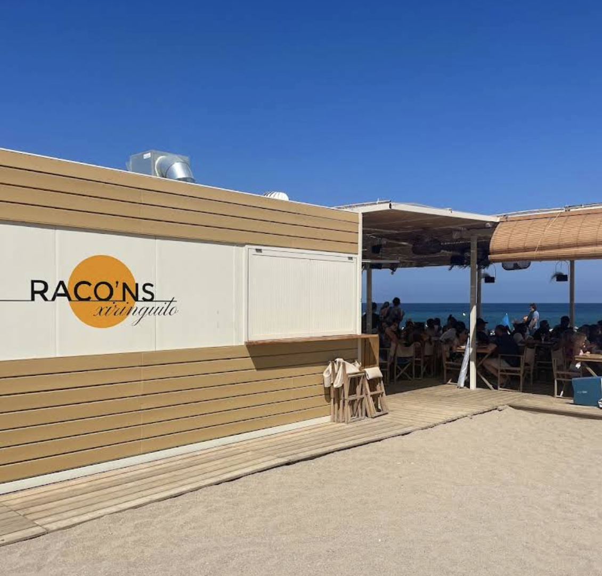
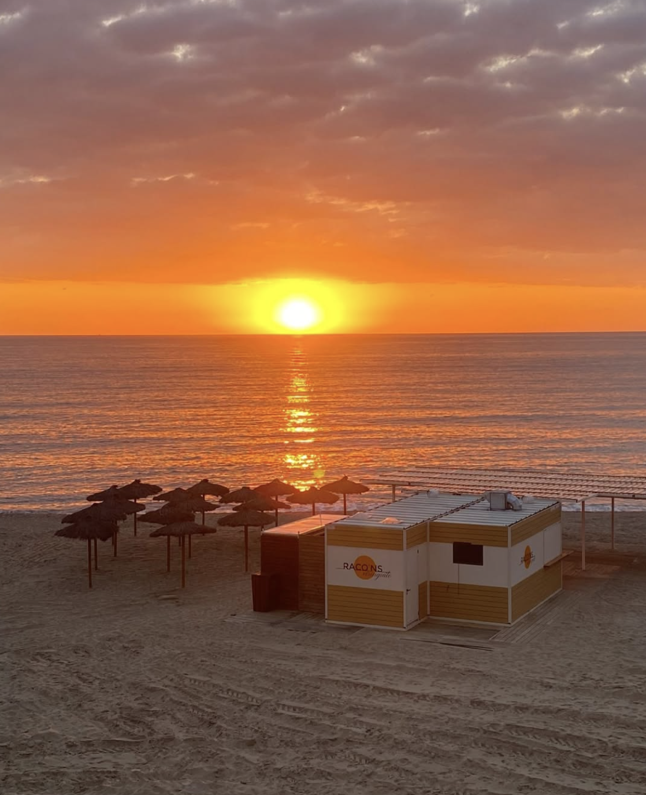
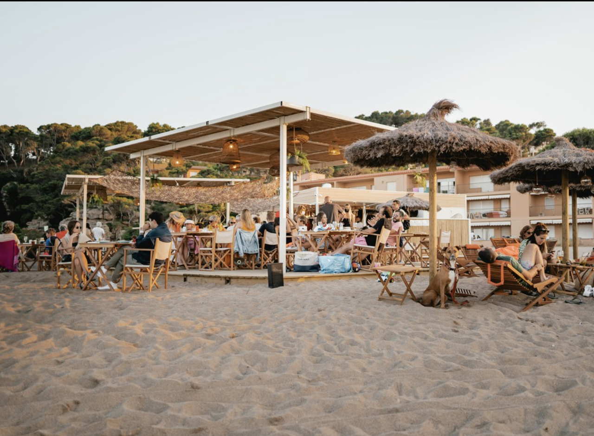
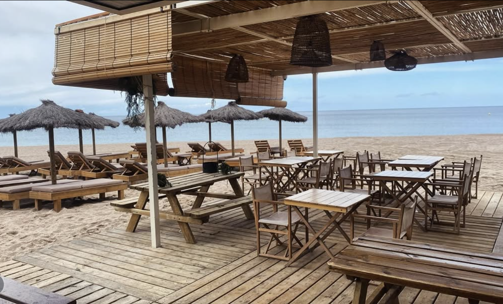
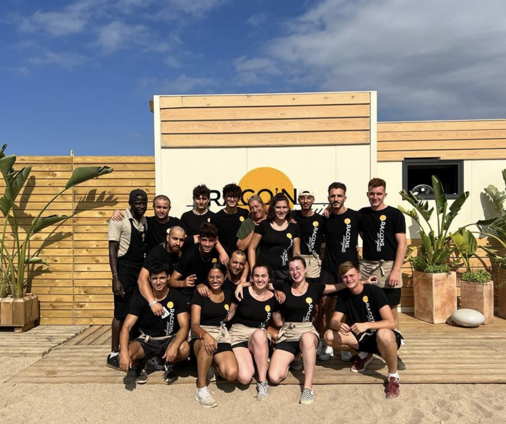
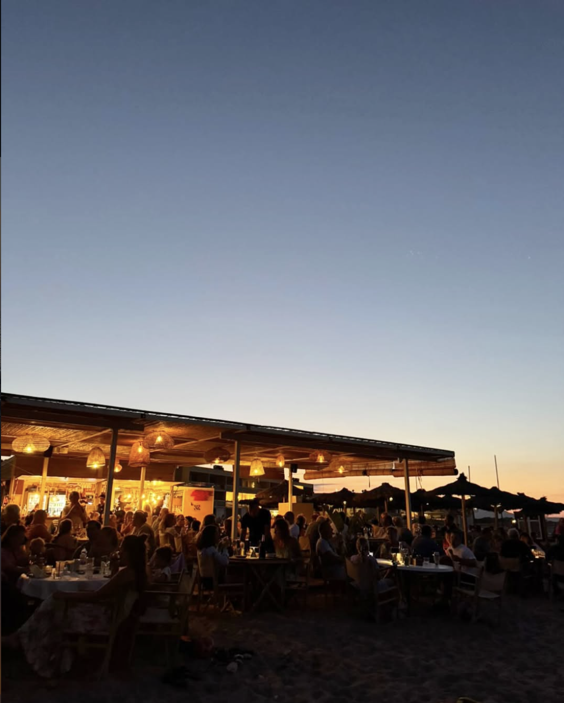

Raco'ns es mucho más que un xiringuito. Es el lugar donde el tiempo se detiene, donde el azul del mar se mezcla con el naranja del atardecer y donde cada copa sabe mejor con los pies en la arena.
En la Platja del Racó de Begur, te ofrecemos una carta cuidada, cócteles artesanales y el ambiente más chill de la Costa Brava.





